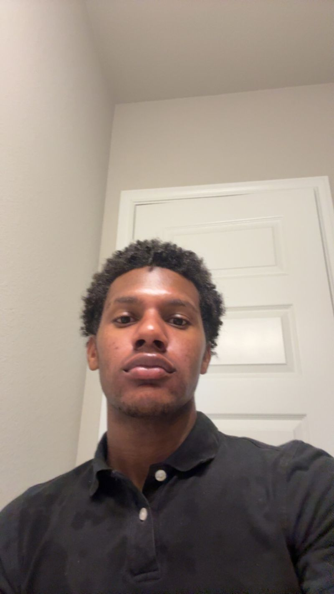

Joshua Aidan Dotson · Accounting Student | Audit & Data Analysis
My Resume
Atascocita, TX · joshuaaidandotson@gmail.com · LinkedIn · U.S. Citizen
University of Houston accounting student (3.57 GPA) seeking an entry-level analyst or auditor role. Audited and compared sales, labor, and tax data between two POS platforms across 30+ locations, and reconciled sales, labor, tax, and cash records. Currently an audit and accounting intern who processes payroll, records general ledger entries, and supports audit-readiness reviews. Applies internal controls, tests software updates for accuracy, and reports discrepancies, findings, and recommendations to supervisors and franchisees.
Education
Bachelor of Business Administration in Accounting (Pre-Business) · 33 semester hours
August 2025 – PresentUniversity of Houston — Houston, TX
- GPA: 3.57/4.0 · Expected May 2029
- Relevant coursework: GOVT 2305 (A), GOVT 2306 (A), ENGL 1301, ENGL 1302 (writing)
- Dean's List, Spring 2026
- Activities: Internal Audit Student Association, Associate (Fall 2026 – Present)
Dual Credit / Transfer Coursework · 15 semester hours
February 2024 – PresentLone Star College Systems — Houston, TX
- Relevant coursework: MATH 1314 (A), ACCT 2301 (A)
Experience
Contracted Athletic Official · 30 hours/week
October 2026 – PresentIndependent Contractor — Houston, TX
- Officiate full weekend game slates of up to 15 hours per day while maintaining focus, accuracy, and professionalism.
- Enforce rules consistently in youth and amateur baseball games to keep play fair and safe.
- Make quick, decisive calls under pressure and resolve disputes calmly with coaches, players, and spectators.
- Manage game-day logistics as an independent contractor, including scheduling, pre-game equipment and field checks, and post-game reporting.
Corporate Manager (POS Systems Manager) · 60+ hours/week
June 2026 – October 2026Crust Pizza Co. — Houston, TX
- Compared and audited sales, labor, and tax data between two POS platforms across 30+ locations, and reported discrepancies to the supervisor and franchisees.
- Served as operating owner of Crust's POS system, administering POS and digital-ordering access, permissions, and security settings across a multi-location network while keeping admin logins and customer, employee, and sales data confidential.
- Handled POS hardware orders with distributor RosperTech of $1,000–$5,000 per franchisee location installed, averaging about 3 installs a week.
- Tested software updates and data-entry workflows for accuracy, documented results as evidence, and communicated findings and recommendations to the supervisor and franchisees.
Assistant Store Manager · 35–40 hours/week
November 2025 – June 2026Crust Pizza Co. — Houston, TX
- Supervised a team of 7 and hired 10+ employees, creating a training workflow that accelerated onboarding and conducting monthly performance reviews and targeted coaching.
- Directed front- and back-of-house operations to meet health, safety, and regulatory requirements, earning health inspection scores of 99/100 nearly every time.
- Counted 3 cash drawers of $200 each per shift.
- Developed and enforced standard operating procedures to improve shift efficiency and labor utilization.
Team Lead · 30–40 hours/week
June 2025 – November 2025Crust Pizza Co. — Houston, TX
- Ran opening and closing procedures, including cash handling, register reconciliation, and securing the store as keyholder.
- Managed the point-of-sale and online ordering systems across company locations, including updating menus, correcting order and ticket errors, and working with vendors to resolve technical issues.
- Supervised front- and back-of-house staff during shifts by assigning tasks, coaching new hires, and making sure food quality and service standards were met, filling in for the manager when needed.
- Monitored inventory, food safety, and cleanliness for compliance with health code and company standards.
Internships
Audit & Accounting Intern · 10 hours/week
October 2026 – PresentGifted & Talented Kid's Academy — Houston, TX
- Support account reconciliations and audit-readiness reviews, reviewing financial records as evidence of accuracy and compliance.
- Record about 20 general ledger entries per week with the CEO and review them for accuracy.
- Process bi-weekly payroll, including recording hours and reconciling payroll records.
- Manage the academy's social media accounts, growing its TikTok by about 1,000 followers.
Student Intern (Contract Extension) · 20 hours/week
June 2024 – October 2024U.S. Department of Defense (Defense Commissary Agency) — Wiesbaden, Germany
- Audited department compliance with federal health, safety, and operating standards; maintained accurate daily logs.
- Processed high-volume POS transactions and reconciled cash drawers in accordance with internal financial controls.
- Analyzed historical sales data with store management to estimate daily production needs and align supply with demand.
- Conducted daily inventory counts and tracked perishable shelf life to support stock planning, shrink control, and cost accounting.
Skills
Internal Controls · Audit Documentation · Excel Proficiency · QuickBooks Proficiency · POS Administration · JIRA Mastery · Monday.com Mastery · AI Automation & Data Validation · Vendor Management · German (A2)